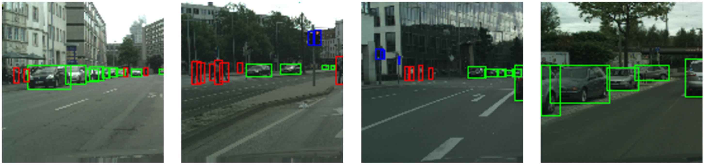
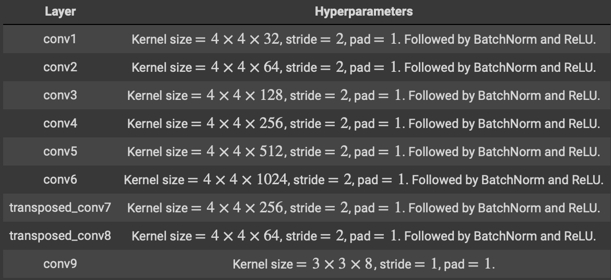
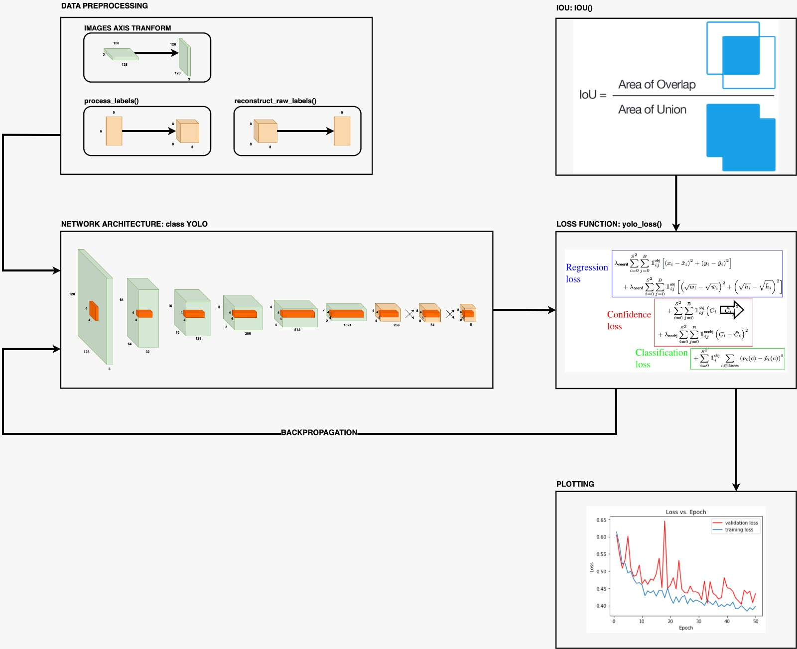
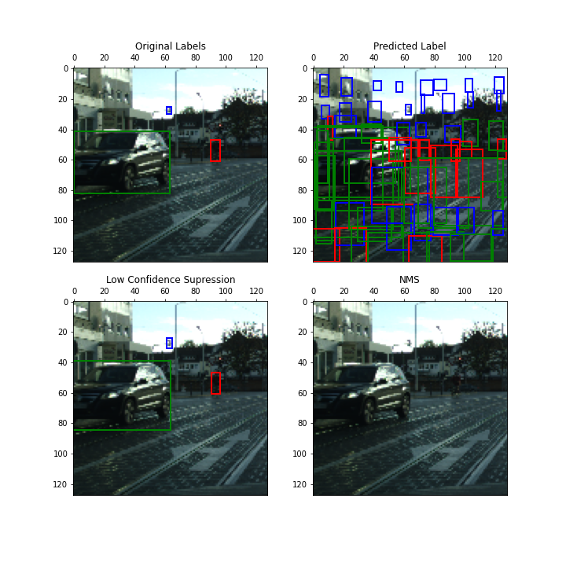

Github Repository
https://github.com/kedarkarpe/YouOnlyLookOnce-SmPl
Introduction
Object detection is a fundamental task in computer vision. The problem of object recognition essentially consists of first localizing the object and then classifying it with a semantic label. In recent deep learning based methods, YOLO is an extremely fast real time multi object detection algorithm.

Model Architecture

Fig: YOLO model layer details
Implementation

Fig: Training pipeline for YOLO
Results

Fig: Original and Predicted bounding boxes by the model
References
- Original YOLO paper: https://arxiv.org/pdf/1506.02640.pdf
- Intuitive Explanation: https://towardsdatascience.com/yolo-you-only-look-once-real-time-object-detection-explained-492dc9230006
- YOLO Video Tutorial: https://www.youtube.com/watch?v=9s_FpMpdYW8&list=PLkDaE6sCZn6Gl29AoE31iwdVwSG-KnDzF&index=30
- mean Average Precision: https://medium.com/@jonathan_hui/map-mean-average-precision-for-object-detection-45c121a31173
- Intersection over Union: https://www.pyimagesearch.com/2016/11/07/intersection-over-union-iou-for-object-detection